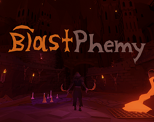
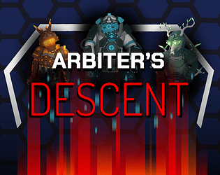
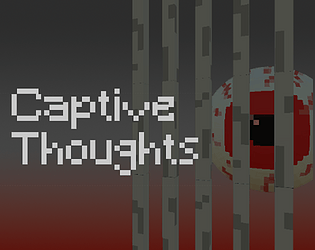
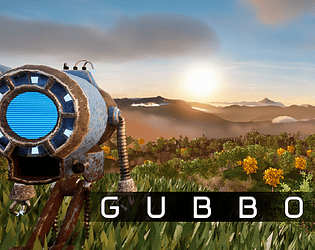

Blastphemy
Blastphemy was the first game I created during my first year in the program. I contributed as a programmer, sound designer, composer, technical artist, and designer. The project was completed over a single semester and was nominated for Best First-Year Game, ultimately winning the Ubisoft Choice Award.
Arbiter's Descent
Arbiter's Descent was developed during my second year of university. I served as a level designer, composer, technical artist, and animator. This project spanned two semesters and led to our team being invited to the annual LevelUp Game Showcase in Toronto.
Captive Thoughts
Captive Thoughts was a weekend long game jam project completed with two other team members. My responsibilities included programming, design, and sound design. While we did not win the jam, the project strengthened my ability to rapidly develop and polish an engaging game under tight time constraints.
Gubbo
Gubbo was the most recent project I completed during my third year. I contributed as an enemy programmer, animator, technical artist, designer, and composer. The project had a two-semester timeline, with additional design work completed over the summer, making it the largest scope project I have undertaken so far.